클로저는 난해하기로 유명한 자바스크립트의 개념 중 하나로 자바스크립트에 관심을 가지고 있다면 한번쯤은 들어보았을 것이다. 사실 클로저는 앞서 살펴본 실행 컨텍스트에 대한 사전 지식이 있으면 이해하기 어렵지 않은 개념이다.
클로저는 자바스크립트 고유의 개념이 아니다. 함수를 일급 객체로 취급하는 함수형 프로그래밍 언어에서 사용되는 중요한 특성이다.
클로저는 자바스크립트 고유의 개념이 아니므로 클로저의 정의가 ECMAScript 사양에 등장하지 않는다. 클로저에 대해 MDN은 아래와 같이 정의하고 있다.
클로저는 함수와 그 함수가 선언된 렉시컬 환경과의 조합이다.
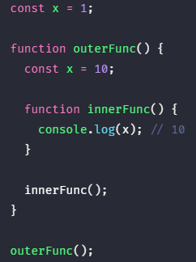
함수 outerFunc 내부에서 중첩 함수 innerFunc가 정의되고 호출되었다. 이때 중첩 함수 innerFunc의 상위 스코프는 외부 함수 outerFunc의 스코프이다. 따라서 중첩 함수 innerFunc 내부에서 자신을 포함하고 있는 외부 함수 outerFunc의 변수 x에 접근할 수 있다.
만약 함수 innerFunc가 함수 outerFunc의 내부에서 정의된 중첩 함수가 아니라면 함수 innerFunc를 함수 outerFunc의 내부에서 호출한다 하더라도 함수 outerFunc의 변수에 접근할 수 없다.
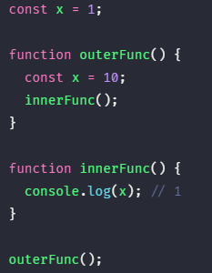
이와 같은 현상이 발생하는 이유는 자바스크립트가 렉시컬 스코프를 따르는 프로그래밍 언어이기 때문이다.
1. 렉시컬 스코프 #
자바스크립트는 함수를 어디서 호출했는지가 아니라 어디에 정의했는지에 따라 상위 스코프를 결정한다. 이를 렉시컬 스코프(정적 스코프)라 한다.
렉시컬 스코프에서 살펴보았던 예제를 다시 한번 살펴보자.
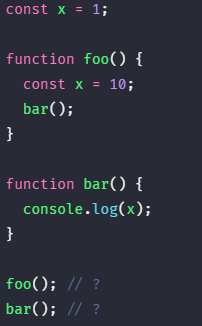
위 예제의 함수 foo와 함수 bar는 모두 전역에서 정의된 전역 함수이다. 함수의 상위 스코프는 함수를 어디서 정의했는지에 따라 결정되므로 함수 foo와 함수 bar의 상위 스코프는 전역이다. 함수를 어디서 호출하는지는 함수의 상위 스코프 결정에 어떠한 영향도 주지 못한다.
실행 컨텍스트에서 살펴보았듯이 스코프의 실체는 실행 컨텍스트의 렉시컬 환경이다. 이 렉시컬 환경은 자신의 외부 렉시컬 환경에 대한 참조를 통해 상위 렉시컬 환경과 연결된다. 이것이 바로 스코프 체인이다.
따라서 “함수의 상위 스코프를 결정한다”는 것은 “렉시컬 환경의 외부 렉시컬 환경에 대한 참조에 저장할 참조값을 결정한다”는 것과 같다. 렉시컬 환경의 “외부 렉시컬 환경에 대한 참조”에 저장할 참조값이 바로 상위 렉시컬 환경에 대한 참조이며 이것이 상위 스코프이기 때문이다. 이 개념을 반영해서 다시 한번 렉시컬 스코프를 정의해 보면 아래와 같다.
렉시컬 환경의 “외부 렉시컬 환경에 대한 참조”에 저장할 참조값, 즉 상위 스코프에 대한 참조는 함수 정의가 평가되는 시점에 함수가 정의된 환경(위치)에 의해 결정된다. 이것이 바로 렉시컬 스코프이다.
2. 함수 객체의 내부 슬롯 [[Environment]] #
함수가 정의된 환경과 호출되는 환경(위치)은 다를 수 있다. 따라서 렉시컬 스코프가 가능하려면 함수는 자신이 호출되는 환경과는 상관없이 자신이 정의된 환경, 즉 상위 스코프(함수 정의가 위치하는 스코프가 바로 상위 스코프이다)를 기억해야 한다. 이를 위해 함수는 자신의 내부 슬롯 [[Environment]]에 자신이 정의된 환경, 즉 상위 스코프의 참조를 저장한다.
다시 말해, 함수 정의가 평가되어 함수 객체를 생성할 때, 자신이 정의된 환경(위치)에 의해 결정된 상위 스코프의 참조를 함수 객체 자신의 내부 슬롯 [[Environment]]에 저장한다. 이때 자신의 내부 슬롯 [[Environment]]에 저장된 상위 스코프의 참조는 현재 실행 중인 실행 컨텍스트의 렉시컬 환경을 가리킨다.
왜냐하면 함수 정의가 평가되어 함수 객체를 생성하는 시점은 함수가 정의된 환경, 즉 상위 함수가 실행되고 있는 시점이며 이때 현재 실행 중인 실행 컨텍스트는 상위 함수의 실행 컨텍스트이기 때문이다.
예를 들어, 전역에서 정의된 함수 선언문은 전역 코드가 평가되는 시점에 평가되어 함수 객체를 생성한다. 이때 생성된 함수 객체의 내부 슬롯 [[Environment]]에는 함수 정의가 평가되는 시점, 즉 전역 코드 평가 시점에 실행 중인 실행 컨텍스트의 렉시컬 환경인 전역 렉시컬 환경의 참조가 저장된다.
함수 내부에서 정의된 함수 선언문은 외부 함수 코드가 평가되는 시점에 평가되어 함수 객체를 생성한다. 이때 생성된 함수 객체의 내부 슬롯 [[Environment]]에는 함수 정의가 평가되는 시점, 즉 외부 함수 코드 평가 시점에 실행 중인 실행 컨텍스트의 렉시컬 환경인 외부 함수 렉시컬 환경의 참조가 저장된다.
함수 객체의 내부 슬롯 [[Environment]]에 저장한 현재 실행 중인 실행 컨텍스트의 렉시컬 환경의 참조가 바로 상위 스코프이다. 또한 자신이 호출되었을 때 생성될 함수 렉시컬 환경의 “외부 렉시컬 환경에 대한 참조”에 저장될 참조값이다. 함수 객체는 내부 슬롯 [[Environment]]에 저장한 렉시컬 환경의 참조, 즉 상위 스코프를 자신이 존재하는 한 기억한다.
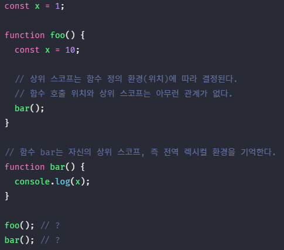
위 예제의 bar 함수가 호출된 시점의 실행 컨텍스트는 아래와 같다.
![함수 객체의 내부 슬롯 [[Environment]]에는 상위 스코프가 저장된다](https://poiemaweb.com/assets/fs-images/24-1.png)
함수 foo와 함수 bar는 모두 전역에서 함수 선언문으로 정의되었다. 따라서 함수 foo와 함수 bar는 모두 전역 코드가 평가되는 시점에 평가되어 함수 객체를 생성하고 전역 객체 window의 프로퍼티가 된다. 이때 생성된 함수 객체의 내부 슬롯 [[Environment]]에는 함수 정의가 평가된 시점, 즉 전역 코드 평가 시점에 실행 중인 실행 컨텍스트의 렉시컬 환경인 전역 렉시컬 환경의 참조가 저장된다. (위 그림에서 ①)
함수가 호출되면 함수 내부로 코드의 제어권이 이동한다. 그리고 함수 코드를 평가하기 시작한다. 함수 코드 평가는 아래 순서로 진행된다.
1. 함수 실행 컨텍스트 생성
2. 함수 렉시컬 환경 생성
2.1. 함수 환경 레코드 생성
2.2. 외부 렉시컬 환경에 대한 참조 할당
2.3. this 바인딩
이때 함수 렉시컬 환경의 구성 요소인 외부 렉시컬 환경에 대한 참조에는 함수 객체의 내부 슬롯 [[Environment]]에 저장된 렉시컬 환경의 참조가 할당된다.(위 그림에서 ②와 ③) 즉, 함수 객체의 내부 슬롯 [[Environment]]에 저장된 렉시컬 환경의 참조는 바로 함수의 상위 스코프를 의미한다. 이것이 바로 함수 정의 위치에 따라 상위 스코프를 결정하는 렉시컬 스코프의 실체이다.
3. 클로저와 렉시컬 환경 #
아래 예제를 살펴보자.
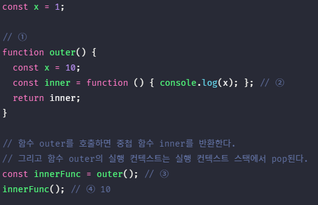
함수 outer를 호출(③)하면 함수 outer는 중첩 함수 inner를 반환하고 생명 주기(life cycle)를 마감한다. 즉, 함수 outer의 호출이 종료하면 함수 outer의 실행 컨텍스트는 실행 컨텍스트 스택에서 제거(pop)된다. 이때 함수 outer의 지역 변수 x와 변수값 10을 저장하고 있던 함수 outer 실행 컨텍스트가 제거되었으므로 함수 outer의 지역 변수 x 또한 생명 주기를 마감한다. 따라서 함수 outer의 지역 변수 x는 더 이상 유효하지 않게 되어 변수 x에 접근할 수 있는 방법은 달리 없어 보인다.
그러나 위 코드의 실행 결과(④)는 함수 outer의 지역 변수 x의 값인 10이다. 이미 생명 주기가 종료되어 실행 컨텍스트 스택에서 제거된 함수 outer의 지역 변수 x가 다시 부활이라도 한 듯이 동작하고 있다.
이처럼 자신을 포함하고 있는 외부 함수보다 중첩 함수가 더 오래 유지되는 경우, 외부 함수 밖에서 중첩 함수를 호출하더라도 외부 함수의 지역 변수에 접근할 수 있는데 이러한 함수를 클로저라고 부른다.
자바스크립트의 모든 함수는 자신의 상위 스코프를 기억한다고 했다. 모든 함수가 기억하는 상위 스코프는 함수를 어디서 호출하던지 상관없이 유지된다. 따라서 함수를 어디서 호출하던지 상관없이 함수는 언제나 자신이 기억하는 상위 스코프의 변수를 참조할 수 있으며 상위 스코프의 변수값을 변경할 수도 있다.
위 예제에서 inner 함수는 자신이 평가될 때 자신이 정의된 위치에 의해 결정된 상위 스코프를 [[Environment]] 내부 슬롯에 저장한다. 이때 저장된 상위 스코프는 함수가 존재하는 한 유지된다.
위 예제로 돌아가 보자. 위 예제에서 outer 함수가 평가되어 함수 객체를 생성할 때(①) 현재 실행 중인 실행 컨텍스트의 렉시컬 환경, 즉 전역 렉시컬 환경을 outer 함수 객체의 [[Environment]] 내부 슬롯에 상위 스코프로서 저장한다.

outer 함수를 호출하면 outer 함수의 렉시컬 환경이 생성되고 앞서 outer 함수 객체의 [[Environment]] 내부 슬롯에 저장된 전역 렉시컬 환경을 outer 함수 렉시컬 환경의 “외부 렉시컬 환경에 대한 참조”에 할당한다.
그리고 중첩 함수 inner가 평가된다.(② inner 함수는 함수 표현식으로 정의하였기 때문에 런타임에 평가된다.) 이때 중첩 함수 inner은 자신의 [[Environment]] 내부 슬롯에 현재 실행 중인 실행 컨텍스트의 렉시컬 환경, 즉 outer 함수의 렉시컬 환경을 상위 스코프로서 저장한다.

outer 함수의 실행이 종료하면 inner 함수를 반환하면서 outer 함수의 생명 주기는 종료한다.(③) 즉, outer 함수의 실행 컨텍스트가 실행 컨텍스트 스택에서 제거된다. 이때 outer 함수의 실행 컨텍스트는 실행 컨텍스트 스택에서 제거되지만 outer 함수의 렉시컬 환경까지 소멸하는 것은 아니다.
outer 함수의 렉시컬 환경은 inner 함수의 [[Environment]] 내부 슬롯에 의해 참조되고 있고 inner 함수는 전역 변수 innerFunc에 의해 참조되고 있으므로 가비지 켈렉션의 대상이 되지 않기 때문이다. 가비지 컬렉터는 누군가가 참조되고 있는 메모리 공간을 함부로 해제하지 않는다.

outer 함수가 반환한 inner 함수를 호출(④)하면 inner 함수의 실행 컨텍스트가 생성되고 실행 컨텍스트 스택에 push된다. 그리고 렉시컬 환경의 외부 렉시컬 환경에 대한 참조에는 inner 함수 객체의 [[Environment]] 내부 슬롯에 저장되어 있는 참조값이 할당된다.

중첩 함수 inner는 외부 함수 outer보다 더 오래 생존하였다. 이때 함수는 외부 함수의 생존 여부(실행 컨텍스트의 생존 여부)와 상관없이 자신이 정의된 위치에 의해 결정된 상위 스코프를 기억한다.
이처럼 중첩 함수 inner의 내부에서는 상위 스코프를 참조할 수 있으므로 상위 스코프의 식별자를 참조할 수 있고 식별자의 값을 변경할 수도 있다.
자바스크립트의 모든 함수는 상위 스코프를 기억하므로 이론적으로 모든 함수는 클로저이다. 하지만 일반적으로 모든 함수를 클로저라고 하지는 않는다.
아래 예제를 브라우저에서 디버깅 모드로 실행해보자.
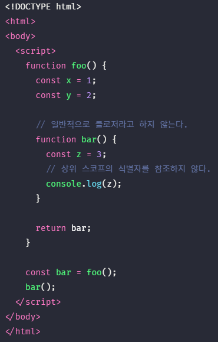
위 예제의 중첩 함수 bar는 상위 스코프의 어떤 식별자도 참조하지 않는다. 이처럼 상위 스코프의 어떤 식별자도 참조하지 않는 경우, 대부분의 모던 브라우저는 최적화를 통해 아래와 같이 상위 스코프를 기억하지 않는다. 참조하지도 않는 식별자를 기억하는 것은 메모리 낭비이기 때문이다. 따라서 bar 함수는 클로저라고 할 수 없다.

또 다른 예제를 브라우저에서 디버깅 모드로 실행해보자.
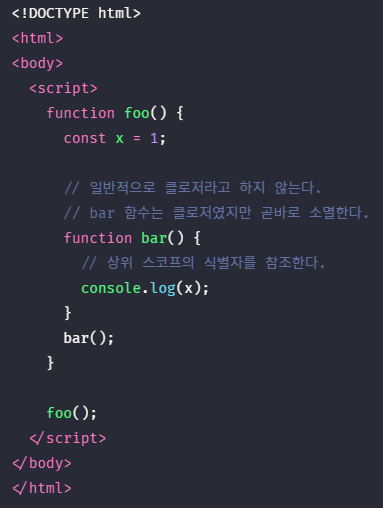
위 예제의 중첩 함수 bar는 상위 스코프의 식별자를 참조하고 있으므로 클로저이다. 하지만 외부 함수로부터 외부로 반환되지 않는다. 즉, 외부 함수와 생명 주기가 같다. 이러한 경우, 중첩 함수 bar는 클로저였지만 외부 함수와 더불어 소멸되기 때문에 호출 위치에 상관없이 상위 스코프를 기억하고 참조할 수 있다는 클로저의 본질에 부합하지 않는다. 따라서 중첩 함수 inner는 일반적으로 클로저라고 하지 않는다.

또 다른 예제를 브라우저에서 디버깅 모드로 실행해보자.
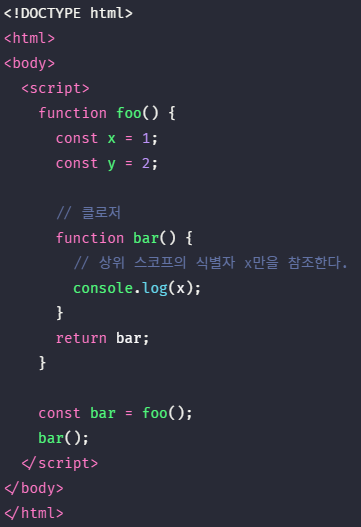
위 예제의 중첩 함수 bar는 상위 스코프의 식별자를 참조하고 있으므로 클로저이다. 그리고 외부 함수로부터 외부로 반환되어 외부 함수보다 더 오래 살아 남는다.
이처럼 자신을 포함하고 있는 외부 함수보다 중첩 함수가 더 오래 유지되는 경우, 외부 함수 밖에서 중첩 함수가 호출되더라도 외부 함수의 식별자에 접근할 수 있는 함수를 일반적으로 클로저라고 부른다.
다만 클로저인 중첩 함수 bar는 상위 스코프의 식별자 x, y 중에서 x만을 참조하고 있다. 이런 경우, 대부분의 모던 브라우저는 최적화를 통해 아래와 같이 상위 스코프의 식별자 중에서 클로저가 참조하고 있는 식별자만을 기억한다.

이처럼 클로저는 중첩 함수가 상위 스코프의 식별자를 참조하고 있고 중첩 함수가 외부 함수보다 더 오래 유지되는 경우에 한정하는 것이 일반적이다.
클로저에 의해 참조되는 상위 스코프의 변수(위 예제의 경우, foo 함수의 변수 x)를 자유 변수라고 부른다. 클로저란 “함수가 자유 변수에 대해 닫혀있다”라는 의미이다. 이를 좀 더 알기 쉽게 의역하자면 “자유 변수와 묶여있는 함수”라고 할 수 있다.
이론적으로 클로저는 상위 스코프를 기억해야 하므로 불필요한 메모리의 점유를 걱정할 수도 있겠다. 하지만 모던 자바스크립트 엔진은 최적화가 잘 되어 있어서 클로저가 참조하고 있지 않는 식별자는 기억하지 않는다. 즉, 상위 스코프의 식별자 중에서 기억해야 할 식별자만 기억한다. 기억해야 할 식별자를 기억하는 것은 낭비라고 볼 수 없다. 따라서 클로저의 메모리 낭비는 걱정하지 않아도 된다.
클로저는 자바스크립트의 강력한 기능으로 적극적으로 사용해야 한다. 클로저가 유용하게 사용되는 상황에 대해 살펴보자.
4. 클로저의 활용 #
클로저는 상태를 안전하게 유지하기 위해 사용한다. 즉, 상태가 의도치 않게 변경되지 않도록 안전하게 은닉한다. 그리고 이전 상태를 기억하다가 상태가 변경되면 최신 상태(state)를 유지한다.
버튼이 클릭될 때마다 클릭한 횟수를 누적하여 화면에 표시되는 카운터를 만들어보자. 이 예제의 클릭된 횟수(변수 num)가 바로 유지해야할 상태이다.
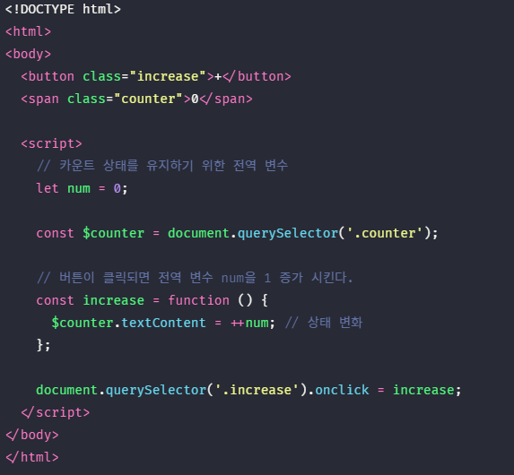
위 코드는 잘 동작하지만 오류를 발생시킬 가능성을 내포하고 있는 좋지 않은 코드다. 처음으로 버튼 클릭 이벤트가 발생하여 이벤트 핸들러 increase가 처음 호출되기 직전에 전역 변수 num의 값은 반드시 0이여야 한다. 그리고 다음 버튼 클릭 이벤트가 발생하여 이벤트 핸들러 increase가 호출되기 전까지 전역 변수 num의 값은 변경되지 말고 이전의 카운트 상태를 유지해야 한다. 다시 말해 전역 변수 num의 값, 즉 카운트 상태는 반드시 이벤트 핸들러 increase만이 변경할 수 있어야 한다.
하지만 전역 변수 num은 언제든지 누구나 접근할 수 있고 변경할 수 있다. 이는 의도치 않게 상태가 변경될 수 있다는 것을 의미한다. 만약 누군가에 의해 의도치 않게 전역 변수 num의 값, 즉 카운트 상태가 변경되면 이는 오류로 이어진다.
따라서 카운트 상태를 유지하기 위한 변수 num은 이벤트 핸들러 increase만이 참조/변경할 수 있도록 하는 것이 바람직하다. 전역 변수 num을 이벤트 핸들러 increase의 지역 변수로 바꾸어 의도치 않은 상태 변경을 방지해보자.
아래 예제에는 아직 살펴보지 않은 DOM API document.querySelector와 이벤트 등록 처리가 등장한다. 지금은 단순히 버튼이 클릭될 때 마다 increase 함수가 호출된다고 생각하자.
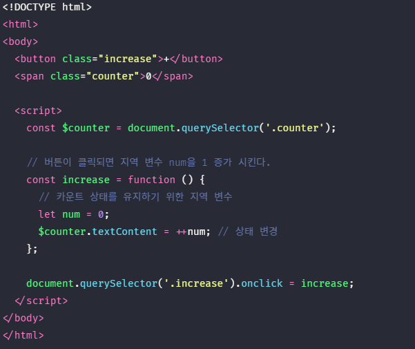
카운트 상태를 유지하기 위한 전역 변수 num을 이벤트 핸들러 increase의 지역 변수로 변경하여 의도치 않은 상태 변경은 방지했다. 이제 변수 num의 상태는 이벤트 핸들러 increase만이 변경할 수 있다.
하지만 이벤트 핸들러 increase가 호출될 때마다 지역 변수 num은 다시 선언되고 0으로 초기화되기 때문에 출력 결과는 언제나 1이다. 다시 말해 변경된 이전 상태를 기억하지 못한다. 이전 상태를 유지할 수 있도록 클로저를 사용해보자.
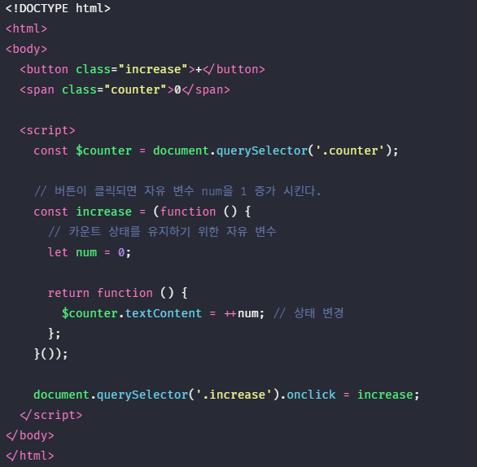
스크립트가 실행되면 즉시 실행 함수가 호출되고 즉시 실행 함수가 반환한 함수가 변수 increase에 할당된다. 변수 increase에 할당된 함수는 자신이 정의된 위치에 의해 결정된 상위 스코프, 즉 즉시 실행 함수의 렉시컬 환경을 기억하는 클로저다.
즉시 실행 함수는 호출된 이후 소멸되지만 즉시 실행 함수가 반환한 클로저는 변수 increase에 할당되어 increase 버튼을 클릭할 때마다 호출된다. 이때 즉시 실행 함수가 반환한 클로저는 자신이 정의된 위치에 의해 결정된 상위 스코프, 즉 즉시 실행 함수의 렉시컬 환경을 기억하고 있다. 따라서 즉시 실행 함수가 반환한 클로저는 카운트 상태를 유지하기 위한 자유 변수 num을 언제나 어디서 호출하든지 참조하고 변경할 수 있다. 즉, 상태를 유지할 수 있다. 이처럼 상태를 안전하게 유지해야 하는 상황에 클로저는 매우 유용하다.
즉시 실행 함수는 한번만 실행되므로 increase가 호출될 때마다 변수 counter가 재차 초기화될 일은 없을 것이다. 또한 변수 counter는 외부에서 직접 접근할 수 없는 은닉된 private 변수이므로 전역 변수를 사용했을 때와 같이 의도되지 않은 변경을 걱정할 필요도 없기 때문에 보다 안정적인 프로그래밍이 가능하다.
현재 increase 버튼만을 대응하는 위 예제를 decrease 버튼에도 대응할 수 있도록 좀 더 발전시켜보자.
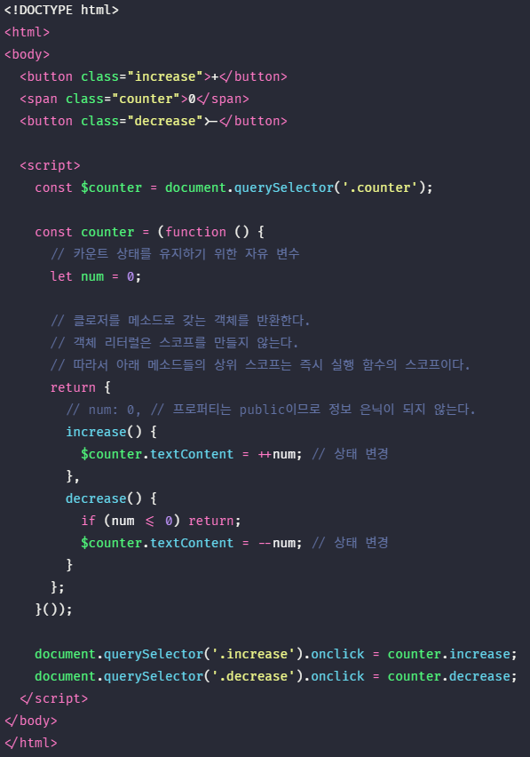
위 예제에서 즉시 실행 함수가 반환하는 객체 리터럴은 함수 실행 단계에서 평가되어 객체가 된다. 이때 객체의 메소드인 함수도 함수 객체로 생성된다. 객체 리터럴의 중괄호는 코드 블록이 아니므로 별도의 스코프를 생성하지 않는다.
따라서 위 예제의 increase, decrease 메소드의 상위 스코프는 increase, decrease 메소드가 평가되는 시점에 실행 중인 실행 컨텍스트인 즉시 실행 함수 실행 컨텍스트의 렉시컬 환경이다. 다시 말해, increase, decrease 메소드의 상위 스코프는 즉시 실행 함수의 스코프이다. 따라서 increase, decrease 메소드가 언제 어디서 호출되던지 상관없이 increase, decrease 함수는 즉시 실행 함수의 스코프의 식별자를 참조할 수 있다.
위 예제를 생성자 함수로 표현하면 아래와 같다.
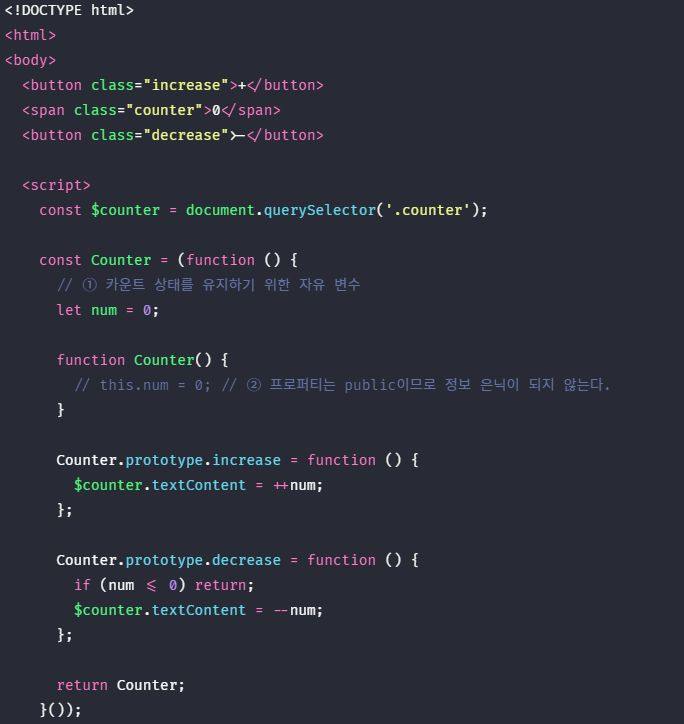
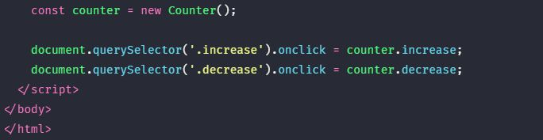
위 예제의 num(①)은 생성자 함수 Counter가 생성할 인스턴스의 프로퍼티가 아니라 즉시 실행 함수 내에서 선언된 변수다. 만약 num이 생성자 함수 Counter가 생성할 인스턴스의 프로퍼티라면(②) 인스턴스를 통해 외부에서 접근이 가능한 public 프로퍼티가 된다. 하지만 즉시 실행 함수 내에서 선언된 변수 num은 인스턴스를 통해 접근할 수 없으며 즉시 실행 함수 외부에서도 접근할 수 없는 은닉된 변수이다.
생성자 함수 Counter는 increase, decrease 메소드를 프로토타입을 통해 상속받는 인스턴스를 생성한다. 이 메소드들은 모두 자신의 함수 정의가 평가되어 함수 객체가 될 때, 실행 중인 실행 컨텍스트, 즉 즉시 실행 함수 실행 컨텍스트의 렉시컬 환경을 기억하는 클로저이다. 따라서 프로토타입을 통해 상속되는 프로토타입 메소드일지라도 즉시 실행 함수의 자유 변수 num을 참조할 수 있다. 다시 말해, 변수 num의 값은 increase, decrease 메소드만이 변경할 수 있다. 이러한 클로저의 특징을 사용해 클래스 기반 언어의 private 키워드를 흉내낼 수 있다.
변수 값은 누군가에 의해 언제든지 변경될 수 있어 오류 발생의 근본적 원인이 될 수 있다. 상태 변경이나 가변 데이터를 피하고 불변성을 지향하는 함수형 프로그래밍에서 부수 효과를 최대한 억제하여 오류를 피하고 프로그램의 안정성을 높이기 위해 클로저는 적극적으로 사용된다.
아래는 함수형 프로그래밍에서 클로저를 활용하는 간단한 예제이다.
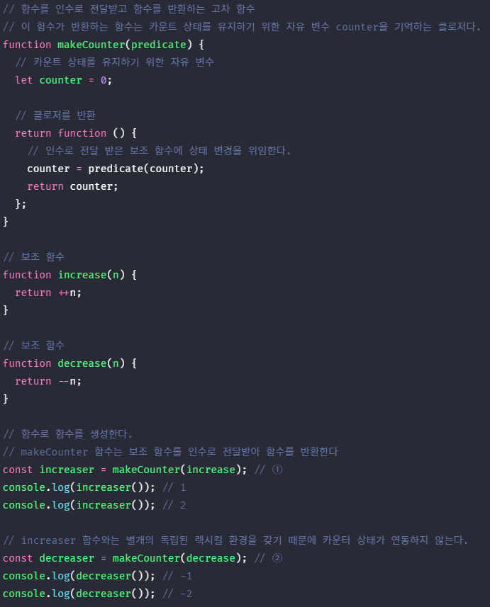
함수 makeCounter는 보조 함수를 인자로 전달받고 함수를 반환하는 고차 함수이다. 함수 makeCounter가 반환하는 함수는 자신이 생성됐을 때의 렉시컬 환경인 함수 makeCounter의 스코프에 속한 변수 counter을 기억하는 클로저다.
함수 makeCounter는 인자로 전달받은 보조 함수를 합성하여 자신이 반환하는 함수의 동작을 변경할 수 있다. 이때 주의해야 할 것은 함수 makeCounter를 호출해 함수를 반환할 때 반환된 함수는 자신만의 독립된 렉시컬 환경을 갖는다는 것이다. 이는 함수를 호출하면 그때마다 새로운 makeCounter 함수 실행 컨텍스트의 렉시컬 환경이 생성되기 때문이다.
①에서 makeCounter 함수를 호출하면 makeCounter 함수의 실행 컨텍스트가 생성된다. 그리고 makeCounter 함수는 인수로 전달받은 보조 함수를 사용하여 함수 객체를 생성하여 반환한 후 소멸된다. makeCounter 함수가 반환한 함수는 변수 increaser에 할당된다. 이때 makeCounter 함수의 실행 컨텍스트는 소멸되지만 makeCounter 함수 실행 컨텍스트의 렉시컬 환경은 makeCounter 함수가 반환한 함수의 [[Environment]] 내부 슬롯에 의해 참조되고 있기 때문에 소멸되지 않는다.

②에서 makeCounter 함수를 호출하면 새로운 makeCounter 함수의 실행 컨텍스트가 생성된다. 그리고 makeCounter 함수는 인수로 전달받은 보조 함수를 사용하여 함수 객체를 생성하여 반환한 후 소멸된다. makeCounter 함수가 반환한 함수는 변수 decreaser에 할당된다. 이때 makeCounter 함수의 실행 컨텍스트는 소멸되지만 makeCounter 함수 실행 컨텍스트의 렉시컬 환경은 makeCounter 함수가 반환한 함수의 [[Environment]] 내부 슬롯에 의해 참조되고 있기 때문에 소멸되지 않는다.

위 예제에서 변수 increaser와 변수 decreaser에 할당된 함수는 각각 자신만의 독립된 렉시컬 환경을 갖기 때문에 카운트를 유지하기 위한 자유 변수 counter를 공유하지 않아 카운터의 증감이 연동하지 않는다. 따라서 독립된 카운터가 아니라 연동하여 증감이 가능한 카운터를 만들려면 렉시컬 환경을 공유하는 클로저를 만들어야 한다. 이를 위해서는 makeCounter 함수를 두번 호출하지 말아야 한다.
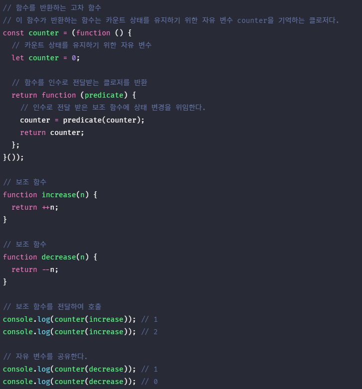
5. 자주 발생하는 실수 #
아래의 예제는 클로저를 사용할 때 자주 발생할 수 있는 실수에 관련한 예제다.
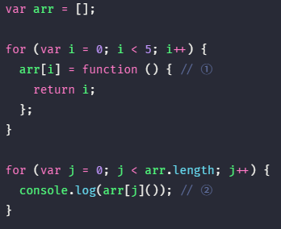
①에서 배열 funcs에는 3개의 함수가 요소로 추가된다. 그리고 ②에서 배열 funcs에 요소로 추가된 3개의 함수는 순차적 호출된다. 이때 배열 funcs에 요소로 추가된 3개의 함수가 0, 1, 2를 반환할 것으로 기대했다면 아쉽지만 결과는 그렇지 않다.
for 문의 초기화 문에서 var 키워드로 선언한 변수 i는 블록 레벨이 아닌 함수 레벨 스코프를 갖기 때문에 전역 변수가 되며 변수 i에는 0, 1, 2, 3, 4, 5가 순차적으로 할당된다. 따라서 배열 funcs에 요소로 추가된 함수를 호출하면 전역 변수 i를 참조하여 i의 값 5가 출력된다.
클로저를 사용해 위 예제를 바르게 동작하는 코드로 만들어보자.

①에서 즉시 실행 함수는 전역 변수 i에 현재 할당되어 있는 값을 인수로 전달받아 매개 변수 id에 할당한 후 중첩 함수를 반환하고 종료된다. 즉시 실행 함수가 반환한 함수는 배열 funcs에 순차적으로 저장된다.
이때 즉시 실행 함수의 매개 변수 id는 즉시 실행 함수가 반환한 함수의 상위 스코프에 존재하며 즉시 실행 함수가 반환한 함수에 의해 참조되므로 자유 변수가 되어 즉시 실행 함수가 반환한 함수에 의해 그 값이 유지된다.
위 예제는 자바스크립트의 함수 레벨 스코프 특성으로 인해 for 문의 초기화 문에서 var 키워드로 선언한 변수가 전역 변수가 되기 때문에 발생하는 현상이다. ES6의 let 키워드를 사용하면 이와 같은 번거로움이 깔끔하게 해결된다.
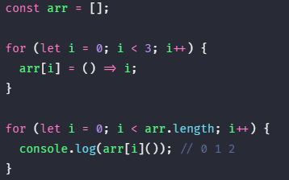
초기화 문에서 let 키워드로 선언한 변수를 사용하면 for 문이 반복될 때마다 for 문 코드 블록의 새로운 렉시컬 환경이 생성된다. 만약 for 문 내에서 정의된 함수가 있다면 이 함수의 상위 스코프는 for 문이 반복될 때마다 생성된 for 문 코드 블록의 새로운 렉시컬 환경이다.
이때 함수의 상위 스코프는 for 문이 반복될 때 마다 식별자(초기화 변수 및 for 문 내 지역 변수 등)의 값을 유지해야 한다. 이를 위해 for 문이 반복될 때마다 독립적인 렉시컬 환경을 생성하여 식별자의 값을 유지한다.

① 초기화 문에 let 키워드로 선언한 변수를 사용한 for 문이 평가되면 먼저 새로운 렉시컬 환경을 생성하고 초기화 문의 식별자와 값을 등록한다. 그리고 새롭게 생성된 렉시컬 환경을 현재 실행 중인 실행 컨텍스트의 렉시컬 환경으로 교체한다.
②, ③, ④ for 문의 반복이 시작되면 새로운 렉시컬 환경을 생성하고 반복 시의 for 문 코드 블록 내의 식별자와 값(증감문 반영 이전)을 등록한다. 그리고 새롭게 생성된 렉시컬 환경을 현재 실행 중인 실행 컨텍스트의 렉시컬 환경으로 교체한다.
⑤ for 문의 반복이 모두 종료되면 for 문이 실행되기 이전의 렉시컬 환경을 실행 중인 실행 컨텍스트의 렉시컬 환경으로 되돌린다.
이처럼 var 키워드로 사용하지 않은 ES6의 반복문(for…in 문, for…of 문, while 문 등)은 반복할 때마다 새로운 렉시컬 환경을 생성하여 반복할 당시의 상태를 마치 스냅샷을 찍는 것처럼 저장한다. 단, 이는 반복문 내부에서 함수 정의가 존재할 때 의미가 있다. 반복문 내부에 함수 정의가 없는 반복문이 생성하는 새로운 렉시컬 환경은 반복 직후, 아무도 참조하지 않기 때문에 가비지 컬렉션의 대상이 된다.
또 다른 방법으로 함수형 프로그래밍 기법인 고차 함수를 사용하는 방법이 있다. 이 방법은 변수와 반복문의 사용을 억제할 수 있기 때문에 오류를 줄이고 가독성을 좋게 만든다.
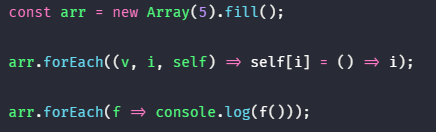
Array 생성자 함수와 Array.prototype.fill 메소드, Array.prototype.forEach 메소드에 대해서는 27장에서 자세히 살펴보도록 하자. 아직 살펴보지 않은 화살표 함수에 대해서는 26장에서 자세히 살펴보자!